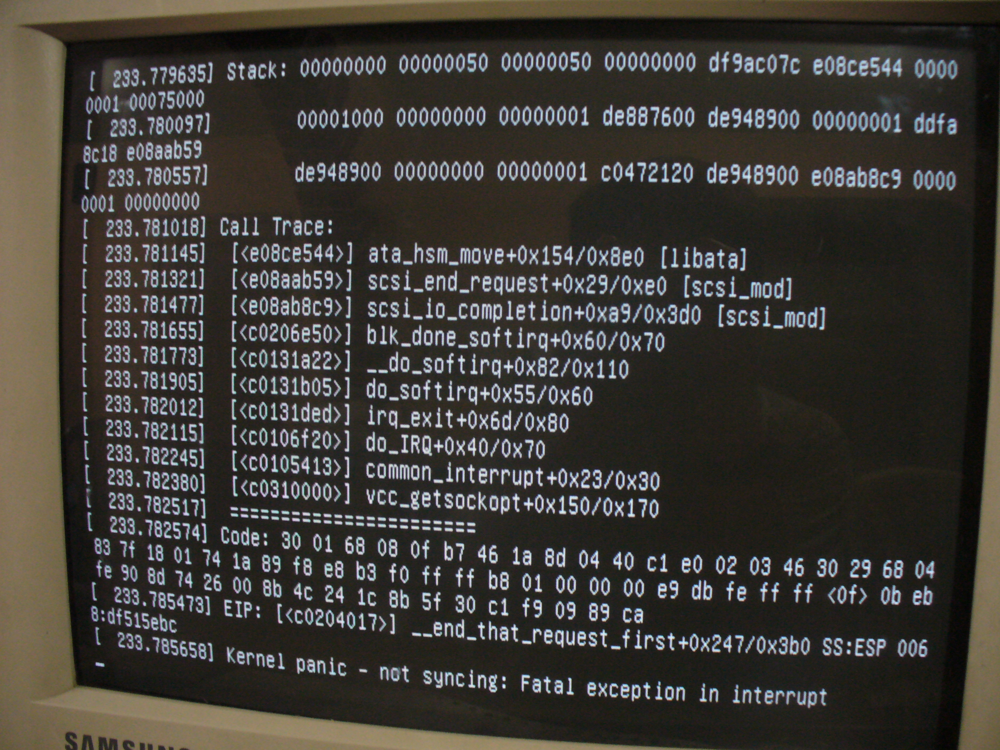

name: light layout: true class: center, middle, light --- #Init Systems ##Corsi Linux Avanzati 2013/2014 ###Fabrizio Ferrai ```html fabrizio.ferrai@gmail.com ``` ###<img src="img/poul.logo.png" alt="POuL Logo" style="height: 4em; margin-top: 2em;"> --- layout:false template:light ##Dove trovate queste slides: ```html http://init.ferrai.tk ``` ###<br/>Disclaimer ####Questo sarà un talk abbastanza teorico, per cui non entrerò nel dettaglio se non quando necessario, tuttavia darò per scontate alcune cose (e.g. cosa è un BIOS o cosa è un processo). Siete caldamente invitati perciò ad approfondire gli argomenti trattati (Un elenco di 'Fonti e Approfondimenti' si trova nell'ultima slide, ma non esitate a chiedere.) --- name: sign layout: true .sign[[Fabrizio Ferrai](http://ferrai.tk)] .course[Corsi Linux Avanzati 13/14] --- name:argomenti .title[ ##Argomenti di oggi: ] ??? ##Queste sono le domande principali delle quali ci occuperemo -- .text[###Cosa è un Init System?] -- .text[###Di cosa si occupa?] -- .text[###Breve storia degli Init Systems] --- template:light layout:false ##Facciamo un passo indietro... --- template: sign layout: true --- name:bootstrapping .title[ ##Bootstrapping (Booting) ] -- .text[###Consiste in tutta quella serie di operazioni che, a partire dalla macchina spenta, ha come risultato finale l'avvio del **Sistema Operativo**] -- .text[###Il flusso di controllo della macchina durante il boot (avvio) passa dal BIOS al bootloader al kernel] --- name:boot1 .title[ ##Il boot nel dettaglio 1/2 ] -- .text[###Il boot di Linux si articola attraverso 5 fasi:] -- .text[####1. Il BIOS effettua delle operazioni specifiche per la piattaforma hardware della macchina] -- .footnote[**[1]** A seconda delle politiche del bootloader viene utilizzata anche una fase 1.5... (e.g. GRUB può leggere il filesystem per localizzare la Fase 2)] .text[####2. Una volta che l'hardware è stato riconosciuto e inizializzato correttamente, il BIOS esegue il programma di boot dal dispositivo di boot prescelto. Questo programma contiene la **Fase 1** del Linux bootloader; essa poi carica la **Fase 2**, che è il grosso del bootloader. **[1]**] --- name:boot2 .title[ ##Il boot nel dettaglio 2/2 ] .text[####3. Spesso il bootloader presenta un menù di scelta, associato a un timeout. Una volta effettuata la scelta il bootloader **carica il kernel**, che si decomprime e mette in atto le funzioni di sistema essenziali, preparandosi alla fase successiva] ??? ##3. Funzioni come hardware di base e memory paging ##4. interrupts, memory management, device and driver initialization -- .text[####4. *start_kernel()* viene quindi chiamata, ed effettua la maggior parte del setup del sistema, prima di lanciare separatamente il processo **idle**, lo **scheduler** e il processo **init** (il primo a essere eseguito **in user space**)] -- .text[####5. Il processo init esegue gli script necessari alla creazione dell'ambiente utente (...)] --- template:light layout:false ##What Init System does? --- name:whatinitdoes .title[ ##What Init System does? ] .text[###Avvia/Riavvia il computer] -- .text[###Termina l'avvio una volta che è stato caricato il kernel] -- .text[###Avvia altri programmi (tipicamente "daemons"). <br/>*e.g.: Server Grafico, Webserver, etc.*] --- name:daemons .title[##Demoni] .text[###Etimologia:] -- .text[####“I demoni sono personaggi della mitologia greca, alcuni dei quali eseguivano compiti di cui gli dei non potevano occuparsi” - *Wikipedia*] -- .text[###In un sistema operativo:] -- .text[####Un demone è un applicazione che viene eseguita in **background**, anzichè stare sotto il diretto controllo dell'utente.] ??? ##In a multitasking environment -- .text[####Tipicamente offre un **servizio** o si occupa periodicamente di alcuni task, e per questo rimane aperto a lungo nel sistema.] --- name:tuopadre .title[##"Luke, sono tuo padre" (cit.)] .text[###Init è l'unico antenato comune di tutti i processi presenti nel sistema: essendo il primo processo ad essere avviato, da lui nascono tutti gli altri] -- .text[###Inoltre ha il compito di 'adottare' tutti i processi che rimangono 'orfani' nel sistema a causa della terminazione del loro padre (In Linux tutti i processi, tranne init, devono avere un padre)] --- name:reliability .title[##Affidabilità] .text[###Init **DEVE** essere affidabile, perchè:] -- .text[###1. Gira in modalità super utente] ??? ##E ha PID1 -- .text[###2. Controlla servizi di sistema critici] -- .text[###3. Se muore --> Il sistema va in Kernel Panic] ??? ##Perchè la gerarchia dei processi non ha padre ##TUTTE le funzionalità non necessarie vanno fuori! --- name:kernelpanic .title[##Kernel Panic] .center[###] --- template:light layout:false ##Some history --- name:evolution1 .title[##Strategie di init: evoluzione 1/2] -- .text[###Sequenziali] -- .text[####Un nuovo demone viene avviato solo una volta che viene terminato l'avvio del precedente] -- .text[####Il parallelismo è nullo.] -- .text[###Gerarchici] -- .text[####Un demone viene avviato solo dopo che tutte le sue dipendenze sono state avviate] ??? ##Spiegare cosa sono le dipendenze -- .text[####Soluzione mista parallelismo/sequenzialità] --- name:evolution2 .title[##Strategie di init: evoluzione 2/2] .text[###Startless (Event based)] -- .text[####L'avvio dei demoni è gerarchico] -- .text[####...Ma vengono avviati solo quando richiesto.] --- name:mostimportant .title[##I principali sistemi di init] -- .text[###SysVInit .little[(1975 - Sequenziale)]] ??? ##Datato ma stabile e veloce -- .text[###LaunchD .little[(2005 - Event Based)]] ??? ##Di Apple, ci speravano -- .text[###Upstart .little[(2006 - Event Based)]] ??? ##From Ubuntu -- .text[###OpenRC .little[(2007 - Gerarchico)]] -- .text[###Systemd .little[(2010 - Event Based)]] --- name:sysvinit .title[##SysVInit - Caratteristiche] -- .text[###Fa parte dello standard LSB .little[(Linux Standard Base)]] ??? ##Progetto per la standardizzazione dei sistemi Linux (filesistem structure, pkg format, etc.) -- .text[###Avvio/arresto sequenziale dei demoni] -- .text[###Crea i demoni leggendo dal file di configurazione /etc/inittab] -- .text[####Contiene i comandi:] -- ```bash reboot shutdown killall poweroff tellinit # serve per cambiare runlevel (...) sulogin wall # per mandare un warning su tutte le tty ``` --- name:launchd .title[##LaunchD - Caratteristiche] -- .text[###È un framework opensource per la gestione di **demoni**, **applicazioni**, **processi**, **script**] ??? ##Utilizzato solo in Mac Os X, ma principale responsabile del rinnovamento nel mondo dei sistemi di init -- .text[###Scritto da Dave Zarzycki (Apple Inc.) e rilasciato con licenza Apache (dal 2006)] ??? ##Non adottato per problemi di licenza -- .text[###Sostituisce:] ```bash init rc init.d script rc.d script SystemStarter (Mac OS X) inetd / xinetd crond / atd ``` ??? ##Architettura simile a systemd ##inetd: daemons che fanno partire applicazioni quando arriva una connessione su una determinata porta --- name:upstart .title[##Upstart - Caratteristiche] ??? ##From Ubuntu -- .text[###Rimpiazza solo init, Event Based] -- .text[###Servizi avviati/arrestati tramite eventi] -- .text[###Eventi generati mentre servizi avviati/arrestati] -- .text[###Eventi in broadcast, respawning dei servizi in caso di crash] -- .text[###Comunicazione attraverso D-Bus] --- .title[##Default init system nelle principali distro] -- .pull-left[ ###SysVInit - Debian (actual) - RHEL6 ] -- .pull-left[ ###OpenRC - Gentoo ] -- .pull-left[ ###Upstart - Ubuntu (actual) - Mint ] -- .pull-top[ ###systemd - Arch Linux - Fedora - RHEL7 (pending) - Ubuntu (planned) - Debian (next release) - CoreOS - Mageia - OpenSUSE - Sabayon Linux - ... ] --- template:light layout:false ##systemd --- .title[##Systemd] --- aaaa --- name:finished .center[###<img src="img/success.jpg" alt="Success!" style="height: auto;">] --- name:fonti .title[##Fonti e approfondimenti:] - http://en.wikipedia.org/wiki/Linux_startup_process - http://en.wikipedia.org/wiki/Bootstrapping - http://en.wikipedia.org/wiki/Init - man page di init - http://wiki.gentoo.org/wiki/Comparison_of_init_systems - http://en.wikipedia.org/wiki/UNIX_System_V - http://en.wikipedia.org/wiki/Linux_Standard_Base - http://en.wikipedia.org/wiki/Linux_kernel_API - http://en.wikipedia.org/wiki/Launchd - http://en.wikipedia.org/wiki/Upstart - http://en.wikipedia.org/wiki/Systemd - http://www.freedesktop.org/wiki/Software/systemd/ - https://www.linux.com/learn/tutorials/524577-here-we-go-again-another-linux-init-intro-to-systemd - https://www.linux.com/learn/tutorials/527639-managing-services-on-linux-with-systemd